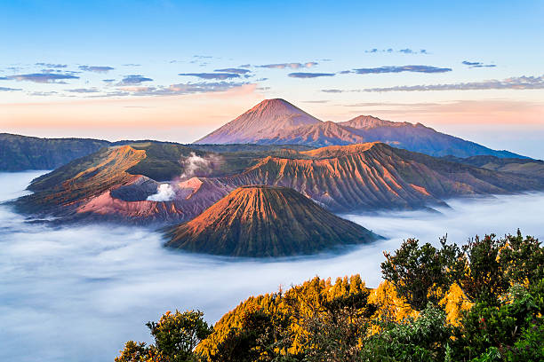

| Beranda | Menu Wisata | Website Pariwisata |
🌎Menu Wisata
Berikut adalah objek wisata menarik di Jawa Timur
Berikut adalah objek wisata menarik di Jawa Timur
|
 Gunung BromoGunung Bromo merupakan salah satu tempat wisata terkenal yang berada di Jawa Timur. |

Kawah IjenKawah Ijen merupakan salah satu tempat wisata terkenal yang berada di Jawa Timur. |

Air Terjun Coban RondaAir Terjun Coban Ronda merupakan salah satu tempat wisata terkenal yang berada di Jawa Timur. |
contact Person : Jelajah Wisata +6285742439163
contact Person : Jelajah Wisata ilhamaraif1223@gmail.com